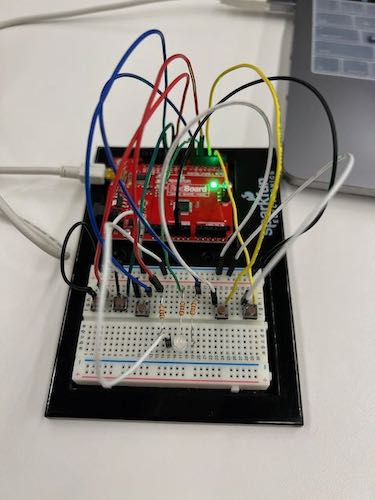
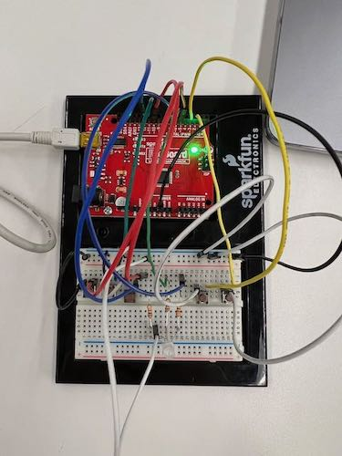

<div class="textcontainer">
<p class="margin"> </p>
<h3>Week 1: Final Project Proposal</h3>
<p class="margin"> </p>
<div class="flexrow">
<a id="btn" href="wk7.zip" download>Download my files from this week!
</a>
</div>
<p class="margin"> </p>
<h4>Assignment: Minimum Viable Product for Final Project</h4>
As a reminder, the pieces that were to make up my final project consisted of:
1. An electronic circuit wiring up macro keys and a program key to an Arduino
2. An interface between the Arduino and a computer that would allow the Arduino to
send and recieve sequences of key presses
3. Coding functionality to be able to assign key sequences to the various macro keys,
using the program key
4. An enclosure / housing to contain all the electronics, with a port to connect to
a computer (or, optionally, Bluetooth / wireless functionality)
5. Ideally, two rotary encoders for non-binary inputs
6. Ideally, an LCD / OLED screen to display macro outputs for debugging etc.
7. Ideally, a toggle switch to choose between separate profiles for the keys.
For my MVP, I wanted to tackle items 1 and 3 of this list: figuring out the code
functionality that would allow me to program the macro keys. Since I didn't yet
know how to get key presses from a connected computer, I decided to make dummy buttons
in my Arduino circuit to treat like keyboard keys. Each button was connected to one
channel of an RGB LED, such that I had a red button, a green button, and a blue button.
The buttons were connected to ground on one side and Arduino digital pins on the other,
which were set to `INPUT_PULLUP` mode so I could check when the buttons were pressed.
I added two more buttons to be my program key and a single macro button, then
started working on the code.
<pre><code style="background-color: #2d2b33;">
// pins to read input buttons
int r_button = 10;
int g_button = 11;
int b_button = 12;
// pins to control LED
int r_out = 5;
int g_out = 6;
int b_out = 7;
...
// in setup function:
pinMode(r_button, INPUT_PULLUP);
pinMode(g_button, INPUT_PULLUP);
pinMode(b_button, INPUT_PULLUP);
...
// in loop function:
// if any input buttons pressed, light up with LED
// with the appropriate color
if (digitalRead(r_button) < 1) {
digitalWrite(r_out, HIGH);
} else {
digitalWrite(r_out, LOW);
}
if (digitalRead(g_button) < 1) {
digitalWrite(g_out, HIGH);
} else {
digitalWrite(g_out, LOW);
}
if (digitalRead(b_button) < 1) {
digitalWrite(b_out, HIGH);
} else {
digitalWrite(b_out, LOW);
}
</code></pre>
<p class="margin"> </p>
<div class="flexrow">


</div>
<p class="caption">The completed MVP circuit. I color-coded my wires to match the appropriate
color channels of the LED.
</p>
I knew I wanted to define a `MacroButton` class to hold the functionality of the macro
keys (checking whether they've been pressed, storing their macro sequences, running
their macro sequences, etc.), so I defined that class first. I had to go back to the
documentation and check a lot of the syntax for programming in C++, especially since
I'm used to languages with variable-length lists instead of fixed arrays. Because
I had to use fixed arrays to hold the macros, I decided to cap the macro sequence
lengths at 20 key presses, although that value might get raised later.
In the `loop` function, I added logic to trigger a while loop when the program button
was pressed, so that the Arduino would start listening to and recording key presses
until the program key was pressed again. I also had to add logic to check which macro
key was being programmed. Then, I added a loop to call the `run` method of any
macro buttons that had been pressed. (Even though I only had one macro button at this
point, I was programming everything as if I had several macro keys stored in an array,
for ease of adding additional buttons later.)
<pre><code style="background-color: #2d2b33;">
// define a class for our macro buttons
class MacroButton{
// declare private variables for this class
private:
int pin; // the control pin to see if this button has been pressed
int macro[20]; // the macro sequence
int macro_len = 0; // the length of the macro sequence
// constructor
public:
MacroButton(int read_pin){
pin = read_pin;
pinMode(pin, INPUT_PULLUP);
}
// bool isPressed(): checks if this button has been pressed.
// returns "true" if pressed and "false" otherwise
bool isPressed(){
...
};
// int assign(): takes a sequence of pin values and a sequence length
// and saves them to this macro button. Returns the macro sequence
// for error checking
int assign(int sequence[], int len) {
...
};
// int get_len(): returns the length of this button's macro sequence
int get_len() {
return macro_len;
};
// int get_macro(): returns this button's macro sequence
int get_macro() {
return macro;
};
// void run(): loops through the pin values in this button's macro
// sequence and one-by-one sets them to "HIGH"
void run() {
...
};
};
...
// in the loop function:
// check if any macro buttons have been triggered
for (int i = 0; i < num_macros; i++) {
if (macro_buttons[i].isPressed()) {
Serial.print("run macro ");
Serial.println(i);
macro_buttons[i].run();
}
}
</code></pre>
At this point, with most of the basic logic implemented, I started to run into problems.
First, I figured out that the high clock speeds on the Arduino meant I had
to separate code out into separate functions and add `delay` commands to make sure
the Arduino would actually wait for key presses before continuing, and that key
presses would only register once instead of multiple times.
I also realized that the macro sequences weren't being properly assigned to the
macro keys. This was a tricky issue to figure out, but Bobby helped me eventually
discover that when I was passing the macro key to be programmed into the function
that would program it, the program was essentially passing a *copy* of the button
instead of the button itself, and so the sequence wasn't being saved. We fixed this
by adding an ampersand in the input definition of the programming function so that
it would edit the actual button that was passed in.
With that, the keyboard started working as expected! The complete final code, with
explanatory comments, can be downloaded at the top of this page. Here's a video of
the macro functionality, using the RGB LED:
<p class="margin"> </p>
<div class="flexrow">
<video controls>
<source src="./mvp_demo.mov" type="video/mp4">
</video>
</div>
<p class="caption">The working MVP!</p>
</div>